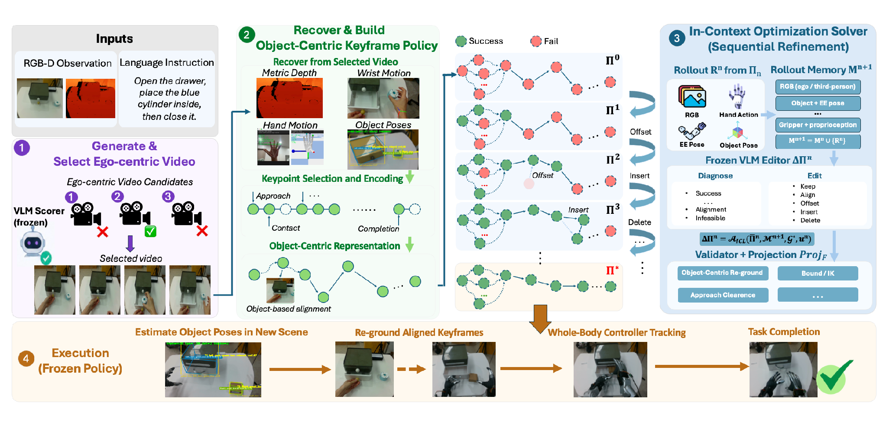

01 / Procedural prior
Generated egocentric interaction
Candidate human-object videos provide a task-level sequence without requiring teleoperated or recorded human demonstrations.
RoboReact turns a single egocentric RGB-D observation and a language instruction into a reusable whole-body manipulation skill, using a generated human interaction video as its procedural prior.
It compiles and calibrates object-centric keyframes offline, then freezes the skill for online re-grounding and execution without VLM access in the test-time control loop.
Featured result
Why RoboReact
Existing whole-body skill acquisition often depends on teleoperation, human-motion retargeting, or costly learning. RoboReact instead begins with a single egocentric RGB-D observation and a language instruction, then uses a generated human interaction video to supply the task's temporal and geometric structure.
The system compiles object-centric keyframes that preserve hand-object geometry. Calibration rollouts are then reviewed by a frozen VLM, whose proposed bounded edits are projected to controller-feasible targets. After refinement, the skill is frozen and re-grounded from current object poses at execution.
01 / Procedural prior
Candidate human-object videos provide a task-level sequence without requiring teleoperated or recorded human demonstrations.
02 / Representation
Hand-object relations are compiled into keyframes tied to object coordinates, retaining the interaction geometry needed for re-grounding.
03 / Refinement
Rollout history informs local keyframe edits, while feasibility projection keeps the updated targets within the controller's executable space.
04 / Deployment
The refined skill is fixed before evaluation and transforms its keyframes from the current object poses at run time.
An offline-to-online pipeline

Generate candidate egocentric human interaction videos from the initial RGB-D observation and task language, then select a suitable task realization.
Recover hand-object motion and compile a compact sequence of object-centric keyframes that preserves the interaction geometry.
Run calibration rollouts, use the frozen VLM to propose bounded local edits from the accumulated history, and project those edits to feasible targets.
Freeze the refined skill, transform its keyframes from current object poses, and track them with the whole-body controller.
Evaluation recordings
The visible 10×, 5×, and 2× badges describe acceleration already encoded in the supplied media. They are labels only; playback remains under the browser's native media controls.
Object variation
Five Open Box object instances plus one Open Drawer trial.
Robot configuration
Two Pour Water trials plus one Open Drawer trial from varied robot poses.
Coordinated whole-body motion
Two Pour Water sequences coupling squatting with manipulation.
Reported evaluation
SR denotes terminal success rate: the percentage of rollouts that complete the task. Avg. Len. denotes the average number of task steps completed per rollout.
| Method | Hand Over | Open Box | Pour Water | Open Drawer |
|---|---|---|---|---|
| ReKep | 35 | 15 | 40 | 20 |
| YOTO | 75 | 65 | 80 | 75 |
| One-Shot Real Prior | 85 | 70 | 80 | 85 |
| RoboReact | 85 | 70 | 85 | 85 |
15 refinement rounds
Hand Over and Pour Water each reached 11/13 terminal completions, with Avg. Len. of 4.69 and 5.38, respectively.
Editor comparison
Pour Water reached 84.6% SR / 5.38 Avg. Len.; Open Box reached 76.9% SR / 3.23 Avg. Len.
Component ablation
The full system achieved 5.62 Avg. Len., compared with 3.69 without keyframe selection, 3.92 without memory, and 4.77 without third-person feedback.
Video-generator comparison
Seedance 2.0 reached 92.3% SR / 5.62 Avg. Len. on Pour Water and 84.6% / 3.54 on Open Drawer. In the same comparison, Seedance 1.5 Pro reported 84.6% / 5.23 and 69.2% / 3.00, respectively.
Frozen-stack robustness
Across the reported robustness cases, the frozen execution stack retained 80–94% of nominal Avg. Len. Terminal completions were 9/13 in the squatting-perturbation case and 12/13 in the undisturbed case.
Reference